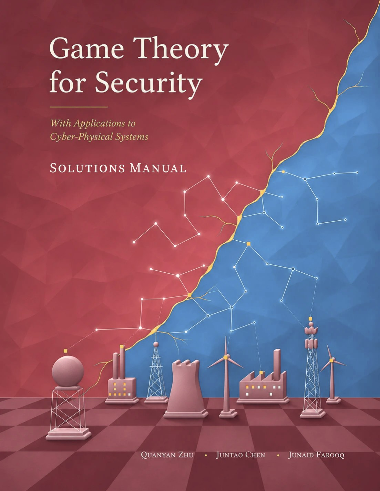

About the book
Power grids, water utilities, pipelines, factories, hospitals and transportation networks are now run by networked sensors, controllers and software. A compromise in the cyber layer no longer stays there: it can open a valve, trip a breaker, disable a safety system or stop a production line. Incidents from Stuxnet and the attacks on the Ukrainian grid to Triton and the Colonial Pipeline shutdown have made the security of these systems an urgent concern.
Security differs from reliability in one essential respect: the failures it guards against are caused by intelligent agents who anticipate the defender's choices and respond to them. This book develops game theory as the foundation for reasoning about such adversaries. It gives precise meaning to deterrence, commitment, deception, information asymmetry, incentives and adaptation, and connects them with control, optimization, learning and risk analysis, so that strategic reasoning can be built into the design of a system rather than added afterward.
The book brings together work from computer science, control, economics and communications in a common language. It is written for graduate students in electrical and computer engineering, computer science, operations research and systems engineering, for researchers entering the security literature, and for practitioners and policy analysts who design or evaluate security measures. It assumes only linear algebra, calculus and elementary probability.
Three parts
Fundamentals of security games, advanced topics, and applications to cyber-physical systems.
Worked examples
Every model is developed through examples drawn from security practice.
Exercises
Each chapter closes with exercises and annotated further reading.
Reproducible code
173 Python scripts reproduce the numbers and figures of the examples.
Sample chapters
The preface and four chapters, reproduced exactly as they appear in the complete book, together with the full table of contents and the bibliography. Page numbers and cross-references refer to the full volume.
- Preface
- Chapter 1Introduction
- Chapter 3Noncooperative GamesFundamentals of Security Games
- Chapter 10Composition of GamesAdvanced Security Games
- Chapter 13Cyber DeceptionApplications of Game Theory in Cyber-Physical Systems
- Bibliography
PDF · 182 pages · 9 MB
Manuscript version; the published edition may differ.
Contents
Open a chapter to see its sections and the scripts that accompany it.
Introduction
Chapter 1IntroductionIn sample
- 1.1Games and Security
- 1.2Strategic Themes in Security Games
- 1.3Recent Advances and Challenges
- 1.4Structure of the Book
- 1.5Discussion, Summary, and Further Reading
- 1.6Exercises
Chapter 2Cyber-Physical System Security: An Introduction
- 2.1Foundations of CPS Security
- 2.2Threat Models and Attack Surfaces
- 2.3Risk Assessment, Goals, and Defenses
- 2.4Standards and Regulations
- 2.5Mapping CPS Security to Game Models
- 2.6Incidents and Future Directions
- 2.7Discussion, Summary, and Further Reading
- 2.8Exercises
Fundamentals of Security Games
Chapter 3Noncooperative GamesIn sample8 scripts
- 3.1Normal-Form Games
- 3.2Extensive-Form Games
- 3.3Applications in Security
- 3.4Discussion, Summary, and Further Reading
- 3.5Exercises
Code
battle_of_the_sexes.pySection 3.1: N-player general-sum games -- Battle of the Sexesbraess_paradox.pySection 3.1: Braess' paradox (selfish routing / Wardrop equilibrium)chicken_correlated_equilibrium.pySection 3.1: Game of Chicken -- mixed Nash vs. correlated equilibriumcut_the_rope.pySection 3.3 (applications) & Exercise 3.10: the Cut-the-Rope gamefictitious_play.pySection 3.1: Fictitious play (belief-based learning)flipit.pySection 3.3 (applications) & Exercise 3.11: FlipIt -- a game of stealthy takeovergraphical_matrix_game.pySection 3.1: Two-Player Zero-Sum Games -- graphical solution of a 2x2 matrix gamestackelberg_security_game.pySection 3.3 (applications) & Exercise 3.9: Stackelberg security game
Chapter 4Games of Incomplete Information6 scripts
- 4.1Bayesian Games
- 4.2Hypergames
- 4.3Applications: Strategic Trust in Cloud-Enabled CPS
- 4.4Applications: Hypergames for Security
- 4.5Discussion, Summary, and Further Reading
- 4.6Exercises
Code
aumann_knowledge_partition.pySection 4.1: Aumann's epistemic model (knowledge partitions, common knowledge)bayesian_monitoring_game.pySection 4.1: Bayesian monitoring gamehypergame_decoy.pySection 4.2: Hypergames -- the decoy hypergame and honeypot deceptionhypergame_heu.pySection 4.4: Hypergame expected utility (HEU) for deception selectionrepeated_cps_monitoring.pySection 4.4: Repeated CPS hypergame -- true-cost monitoringstrategic_trust_cps.pySection 4.3: Strategic trust in cloud-enabled CPS
Chapter 5Dynamic and Stochastic Games5 scripts
- 5.1Markov Games with Complete Information
- 5.2Markov Games with Incomplete Information
- 5.3Security Applications of Markov Games
- 5.4Discussion, Summary, and Further Reading
- 5.5Exercises
Code
belief_update.pySection 5.2, Example "A two-type belief update with a defense implication"matrix_game.pyHelper module: value of a zero-sum matrix game via linear programming.single_controller_lp.pySection 5.1.2: single-controller zero-sum Markov games and linear programmingtwo_state_zero_sum.pySection 5.1.2, Example "A two-state zero-sum Markov game"value_iteration_zero_sum.pySection 5.1.2: Shapley value iteration for discounted zero-sum Markov games
Chapter 6Differential Games19 scripts
- 6.1Linear-Quadratic Differential Games
- 6.2Differential Games with Switching Modes
- 6.3Differential Games with Algebraic Constraints
- 6.4Application: Resilient Control of Power Systems
- 6.5Application: Secure Control of Satellites
- 6.6Discussion, Summary, and Further Reading
- 6.7Exercises
Code
constellation_coverage_game.pySelf-healing coverage in one orbital plane as a potential game (Example in Section 6.5, in the spirit of Zhao and Zhu). N satellites at phase angles theta_i on a circle. Each satellite i minimizes the sum of the squared gaps to its two neighbors plus a quadratic maneuver cost; the game has the potential sum of squared gaps, minimized by equal spacing.cw_detection_delay.pyLate detection in the orbital pursuit-evasion game (Section 6.5). The inspector plays its saddle-point strategy from t = 0. The defended satellite is passive until it detects the approach at time t_d and plays its saddle-point strategy afterwards. In the zero-effort-miss variable: dz/dt = -(1/r_P - e(t)/r_E) G G' Pi z, e(t) = 1 for t >= t_d.cw_engagement_details.pyThrust profiles, velocity increments, and horizon dependence for the orbital pursuit-evasion game of Section 6.5 (normalized units, n = 1).cw_pursuit_evasion.pyOrbital pursuit-evasion as a zero-sum LQ differential game (Section 6.5).descriptor_step_response.pyStep response of the three-bus descriptor system (Figure in Section 6.3): a unit load step at the load bus moves the line flows instantly and the frequencies continuously.descriptor_three_bus.pyZero-sum LQ game on an index-one descriptor system: a three-bus network (Example 6.6).five_bus_attack_leverage.pyLeverage of a load-altering attacker in a five-bus network (Example in Section 6.3). Generators at buses 1-3, loads at buses 4-5. Computes the distribution matrix Gamma of Proposition 6.3.x, the algebraic attenuation bound, and the critical level of the game when the attacker controls the load at bus 4, at bus 5, or at both.jump_game_monte_carlo.pyMonte Carlo check and sample path for the two-mode scalar game (Example 6.6). Mode 1: dx = u + w. Mode 2: dx = 0.5 u + 1.5 w. Rates alpha (1->2), rho (2->1). Under the saddle-point strategies the expected soft-constrained cost equals Z_1 x0^2.jump_lq_game_scalar.pyZero-sum LQ differential game with two Markov modes (Example 6.5).lq_frequency_game.pyScalar zero-sum LQ differential game on the frequency loop (Examples 6.1 and 6.2).nash_riccati_two_operators.pyFeedback Nash equilibrium of a two-operator LQ differential game (Example 6.3).output_feedback_game.pyZero-sum LQ game with noisy measurements (Section 6.1): the scalar integrator dx/dt = u + w, y = x + v, cost int (x^2 + u^2 - gamma^2 (w^2 + v^2)) dt. State-feedback Riccati: 1 - (1 - 1/gamma^2) Z^2 = 0. Filter Riccati: 1 - (1 - 1/gamma^2) S^2 = 0. Coupling condition: S Z < gamma^2. The controller is u = -Z xhat, d xhat/dt = u + Z xhat / gamma^2 + L (y - xhat), L = S / (1 - S Z / gamma^2). The script checks the closed-loop attenuation numerically.power_monte_carlo.pyMonte Carlo evaluation of the three frequency controllers of Section 6.4 over random mode paths (no load attack): distribution of the quadratic cost and of the peak frequency deviation of generator 1.power_sensitivity.pySensitivity of the resilient frequency-control design of Section 6.4 to the cyber rates: critical level versus recovery rate, and worst-case value versus compromise rate.prices_many_operators.pyPrices of anarchy and of information for N symmetric operators (Section 6.1). Scalar game dx/dt = a x + sum_i u_i, J_i = int (x^2 + u_i^2) dt. Feedback Nash: (2N-1) p^2 - 2 a p - 1 = 0, cost p x0^2 per operator. Open-loop Nash: N m^2 - 2 a m - 1 = 0, cost (1 + m^2) / (2 (N m - a)) x0^2 per operator. Team optimum: N P^2 - 2 a P - N = 0, cost P / N x0^2 per operator.recovery_deterrence_game.pyRecovery investment against a strategic attacker (Section 6.2). Physical layer: the two-mode zero-sum game of Example 6.5 at gamma = 4, with value Z_1(alpha, rho). Cyber layer: the operator commits to a recovery rate rho at the cost c_D * rho. The attacker observes rho and chooses the compromise rate alpha in [0, alpha_max] at the cost c_A * alpha, maximizing Z_1(alpha, rho) - c_A * alpha. The operator minimizes Z_1(alpha*(rho), rho) + c_D * rho.resilient_power_control.pyRobust and resilient control of the three-bus network with a Markov cyber mode (Section 6.4). Mode 1: normal. Mode 2: compromised (the control channel of generator 2 is lost and a dynamic load-altering attack with gain kappa is active). Rates alpha (1->2), rho (2->1).stackelberg_two_operators.pyStackelberg solution of the two-utility game (Example in Section 6.1): utility 1 commits to a linear feedback gain k1, utility 2 responds with its optimal regulator gain. dx/dt = a x + u1 + u2, J_i = int (x^2 + u_i^2) dt.swing_attenuation.pyZero-sum LQ game on a single generator against an infinite bus (Example in Section 6.1): delta' = omega, omega' = -K delta - D omega + u + w, cost delta^2 + omega^2 + u^2 - gamma^2 w^2. Compares the regulator with the saddle-point controller through the frequency response from the attack w to the regulated output (delta, omega, u).
Advanced Security Games
Chapter 7Learning in Games and Algorithms17 scripts
- 7.1Learning in Repeated Games
- 7.2Reinforcement Learning for Markov Games
- 7.3Evolutionary Games and Dynamics
- 7.4Security Applications
- 7.5Discussion, Summary, and Further Reading
- 7.6Exercises
Code
bandit_score_update.pySection 7.1 (Learning in Repeated Games): Example 7.1 "One bandit score update"bayesian_conjecture.pySection 7.4 (Security Applications), Subsection 7.4.2: Example 7.15 "Conjecture update and conjectural response" -- part 1, the Bayesian conjecture update (part 2, the rollout decision, is in conjectural_response.py).berk_nash_monitoring.pySection 7.4 (Security Applications), Subsection 7.4.2: Example 7.16 "A Berk-Nash equilibrium of a misspecified defender"conjectural_response.pySection 7.4 (Security Applications), Subsection 7.4.2: Example 7.15 "Conjecture update and conjectural response" -- part 2, the conjectural (rollout) response (part 1, the Bayesian update, is in bayesian_conjecture.py).external_regret.pySection 7.1: Example 7.5 "External regret over four rounds"honeypot_engagement.pySection 7.4 (Security Applications), Subsection 7.4.1: Example 7.13 "Adaptive honeypot engagement"matrix_game.pyHelper module: value of a two-player zero-sum matrix game via LP.minimax_q_backup.pySection 7.2: Example 7.8 "Solving the state-wise minimax backup"multiplicative_weights.pySection 7.1: Example 7.4 "One multiplicative-weights step"nash_q_selection.pySection 7.2: Example 7.9 "Why equilibrium selection matters in Nash-Q"occupation_measure.pySection 7.2: Example 7.10 "A discounted occupation measure"q_learning_backup.pySection 7.2 (Reinforcement Learning for Markov Games): Example 7.7 "One Q-learning backup"regularized_fictitious_play.pySection 7.1: Example 7.3 "A regularized fictitious-play step"replicator_dominated.pySection 7.3 (Evolutionary Games and Dynamics): Example 7.11 "Threat-intelligence sharing"shapley_game.pySection 7.1: Example 7.6 "Shapley's game"smdp_q_learning.pySection 7.4 (Security Applications), Subsection 7.4.1: Example 7.14 "One SMDP Q-learning update"softmax_best_response.pySection 7.1: Example 7.2 "Softmax and best-response updates"
Chapter 8Network Games26 scripts
- 8.1Games on Networks
- 8.2Network Formation Games
- 8.3Network Design
- 8.4Network Interdiction Games
- 8.5Application: Multi-Layer Resilient Network Formation
- 8.6Discussion, Summary, and Further Reading
- 8.7Exercises
Code
architecture_contagion.pyWhich architecture is safest when nodes protect themselves? (Section 8.1) Equilibrium and efficient security levels of the contagion model of contagion_investment_game.py on several networks with six nodes.attack_recovery_consensus.pyRepeated attack and recovery on a network (Section 8.5, after Nugraha et al., 2021). Part 1: the generalized edge connectivity after the removal of m links, and the largest attack cost per link and unit time at which an attack without recovery still pays. Part 2: consensus x' = -L(t) x on a ring under an attacker with an energy budget, who can keep m links cut only for a fraction of the time.bayesian_protection_game.pyProtection as a best-shot public good with incomplete information about the network (Example in Section 8.1, after Galeotti et al.). A node knows its own degree k. It is protected if it or at least one neighbor invests (cost c). Neighbors' degrees are drawn from the size-biased degree distribution. Symmetric equilibrium: invest iff k <= t.budget_intervention.pyOptimal intervention with a budget in the linear-quadratic network game (Section 8.1, after Galeotti, Golub and Goyal). The planner changes the private returns a to a + d with |d|^2 <= C and maximizes the equilibrium welfare W = |x|^2 / 2, x = (I - delta G)^{-1}(a + d). In the eigenbasis of G the problem separates, and the multiplier is found by bisection.cascade_backup_game.pyCascading failures between two interdependent layers and the placement of backups (Section 8.5). Power node i supplies communication node i, and communication node i controls power node i. A node works if it is connected within its own layer, through working nodes, to the root of that layer, and if its partner in the other layer works. A node with a backup does not need its partner. The attacker disables one node other than the two roots, which are hardened, and the defender places b backups beforehand. The script computes the cascade, the best placement of backups, the value of the zero-sum game with a hidden backup, and the effect of one additional communication link.connections_model.pyPairwise stable and efficient networks in the connections model, with an exposure term (Examples 8.2-8.3). u_i(g) = sum_{j != i} (delta^d_ij - ell * phi^d_ij) - c * deg_i. ell = 0 gives the Jackson-Wolinsky symmetric connections model.contagion_investment_game.pySecurity investment with contagion (Section 8.1, after Acemoglu, Malekian and Ozdaglar). Node i chooses a security level q_i in [0,1] at the cost kappa q_i^2 / 2. With probability q_i it is immune. An attack hits one node; if that node is susceptible, the infection spreads to every susceptible node reachable through susceptible nodes. An infected node loses 1. The attack is either random (uniform over the nodes) or strategic (the attacker observes q and hits the node that maximizes the expected number of infections).design_comparisons.pyComparisons for Section 8.3: random versus targeted link failures on three ten-node designs, and greedy growth of algebraic connectivity on the enterprise network.evasion_constraint_generation.pyConstraint generation for an evasion game on a grid (Section 8.4, Scaling Up). An intruder travels from one corner of a 5 x 5 grid to the opposite corner. The defender places one monitor on a link; a monitor on link e detects a passing intruder with probability d_e. The game is solved with a growing set of intruder paths: the restricted game is a linear program, and the intruder's best response is a shortest-path problem.formation_dynamics.pyImproving-path dynamics in the connections model with a targeted attack (Section 8.2). At each step a pair of nodes is drawn at random. An existing link is deleted if one of its ends gains strictly; an absent link is added if one end gains strictly and the other does not lose. The script reports where the process comes to rest, from the star and from the empty network.formation_under_attack.pyConnections model with a targeted node attack (Example in Section 8.2). With probability pi an attacker disables a node whose loss reduces total welfare the most (uniformly at random among such nodes); payoffs are expected values. Enumerates the networks on five nodes.inoculation_game.pyDecentralized inoculation game (Section 8.4, after Aspnes, Chang and Yampolskiy). Each node either inoculates at cost C or stays vulnerable. An intrusion starts at a uniformly random node and infects its whole component of vulnerable nodes. A vulnerable node loses L if infected. A second variant has a strategic attacker who enters a largest vulnerable component. Enumerates pure Nash equilibria and the social optimum.interdependent_formation.pyInterdependent network formation game (Example 8.6, after Chen and Zhu).interdiction_game.pyLink interdiction as a zero-sum game on the enterprise network (Section 8.4). The defender protects one link, the attacker cuts one or two links, a protected link cannot be cut, and the damage is the total value of the nodes cut off from the gateway.large_network_attack.pyRandom failures and targeted attacks on large networks (Section 8.3). Compares a random network with a Poisson degree distribution (Erdos-Renyi) and a network with a heavy-tailed degree distribution (Barabasi-Albert), both with mean degree 4. A fraction f of the nodes is removed, either at random or in decreasing order of degree, and the size of the largest connected component is recorded as a fraction of all nodes.limited_attention_game.pySecurity effort with limited attention (Section 8.1). Linear-quadratic effort game on the enterprise network, u_i = a x_i - x_i^2/2 + delta x_i sum_j g_ij x_j. Each node can attend to at most m neighbors. It attends to the neighbors with the largest efforts and best responds to these alone. A consistent pair of attention sets and efforts is found by iteration (in the spirit of the Gestalt Nash equilibrium of Chen and Zhu).network_extras.pyAdditional computations for Section 8.1 on the enterprise network of Example 8.1: best-response dynamics, targeted subsidies, and a threshold game of protection.network_lq_game.pySecurity effort game on a fixed network (Example 8.1).node_immunization_game.pyImmunization against a spreading attack as a zero-sum game (Section 8.4). The attacker picks an entry node on the enterprise network; the infection spreads to every node that can be reached through non-immunized nodes. The defender immunizes one node. Damage = number of infected nodes.path_hardening_game.pyHardening against lateral movement (Section 8.4): shortest-path interdiction. The intruder moves from the entry node s to the target t along a path of least total effort. The defender hardens b links beforehand; a hardened link costs the intruder an additional effort DELTA. The defender maximizes the intruder's least effort (a leader-follower game). Exhaustive search is compared with the greedy rule that repeatedly hardens a link on the current shortest path.protection_recovery_game.pyThree-stage protection-attack-recovery game on an infrastructure network (Section 8.2.3, model of Chen, Touati and Zhu). Brute-force subgame perfect equilibrium for small n, and the closed-form outcome in the regime 1 - tau - tau_R > (n-1) c_D.secure_link_design.pyMinimum-cost networks that stay connected after k link removals when p links can be protected (Proposition 8.2.2, after Chen, Touati and Zhu). Brute force on small n.sequential_two_operator_design.pySequential secure design by two operators (Section 8.5, after Chen, Touati and Zhu, 2021). Operator 1 creates links within layer 1 and interlinks, operator 2 then creates links within layer 2 and interlinks, and the attacker finally removes links at the cost c_A each. Each operator earns 1 if the final network is connected, minus the cost of its own links; the attacker earns 1 if the network is disconnected, minus the cost of the removed links. Backward induction by enumeration over all networks on n1 + n2 nodes.spreading_threshold.pyContaining a spreading attack by design (Section 8.3). In the SIS model on a graph with adjacency matrix G, an infection with rate beta and recovery rate mu dies out if beta/mu < 1/lambda_max(G). The script evaluates which single link removal or node hardening lowers lambda_max the most on the enterprise network, and what each choice costs in algebraic connectivity.two_layer_connectivity_game.pyGames-in-games connectivity control of a two-layer mobile network (Section 8.3.3, after Chen and Zhu). Two UAV relays (layer 1) connect two pairs of UGVs (layer 2) that must stay within SITE_R of two sites 8 km apart. Link weight w(d) = min(1, exp(-(d-2)/1.5)). A jammer removes psi = 1 link to minimize the algebraic connectivity; each operator in turn moves its own robots (at most dmax per step, keeping a safety distance) to maximize the post-attack connectivity. The operators use projected ascent along the Fiedler-vector gradient with a monotone acceptance test, a simple stand-in for the semidefinite program of the original paper.weight_adaptation_game.pyAdapting link weights to a spreading threat (Section 8.2; static counterpart of the differential game of Huang and Zhu). Node i scales the weight of its links by s_i in [0,1]; the link ij then has weight s_i s_j. The infection level z solves the mean-field SIS steady state z_i = r_i / (1 + r_i), r_i = (beta/mu) sum_j s_i s_j g_ij z_j. Node i pays L z_i + q (1 - s_i)^2: the expected loss from infection plus the loss of connectivity. Nash equilibrium by best-response iteration, social optimum by direct minimization, and the equilibrium under a penalty that charges each node for the infection it causes to others.
Chapter 9Mechanism Design Theory12 scripts
- 9.1Introduction to Mechanism Design
- 9.2Principal–Agent Models
- 9.3Contract Theory
- 9.4Application: Security-Aware Cyber Insurance
- 9.5Application: Security as a Service for Cloud-Enabled Control
- 9.6Discussion, Summary, and Further Reading
- 9.7Exercises
Code
attack_aware_insurance.pySection 9.4: Attack-aware single-node cyber-insurance saddle pointaudit_commitment.pySection 9.1: Formal Example -- Security audit commitment (Stackelberg mechanism)compliance_attestation.pySection 9.2: Truthful compliance attestation (critical-price mechanism)continuum_screening.pySection 9.3: Continuum-type screening -- managed security service (cost types)flipin_insurance.pySection 9.4: FlipIn -- persistent-threat cyber insurance (local FlipIt game)inverse_stackelberg_access.pySection 9.1: Inverse Stackelberg -- conditional access (rule vs. action)pivot_public_good.pySection 9.2: Pivot mechanism -- shared threat-intelligence feed (public good)refund_sequential_screening.pySection 9.3: Sequential screening -- incident-response retainers with refundssecurity_as_a_service.pySection 9.5: Security as a service for cloud-enabled control (IoCT)security_awareness_contract.pySection 9.2: Binary moral hazard -- formal security-awareness contractstackelberg_duopoly.pySection 9.1: Formal Example -- Stackelberg duopoly (sequential commitment)two_type_screening.pySection 9.3: Optimal two-type screening -- security-control screening
Chapter 10Composition of GamesIn sample4 scripts
- 10.1Introduction
- 10.2Equilibrium Foundations for Composed Games
- 10.3Games-in-Games for Cross-Layer Resilient Control
- 10.4Cyber-Physical Signaling Games for Multi-Agent Autonomous Systems
- 10.5iSTRICT: Interdependent Strategic Trust in the Cloud-Enabled IoCT
- 10.6Multi-Resolution Dynamic Games for Cyber Campaigns
- 10.7Discussion, Summary, and Further Reading
- 10.8Exercises
Code
istrict_fixed_point.pySection 10.5: iSTRICT layered meta-game Example 10.4: one iSTRICT fixed-point iteration (one cloud service)multiresolution_zoom.pySection 10.6, Example: zooming into three components of an enterprisescalar_cross_layer.pySection 10.3, Example: two cyber modes and a scalar plantvehicle_trust_metagame.pySection 10.2, Example: cloud-assisted vehicle trust and control
Chapter 11Bounded Rational Games10 scripts
- 11.1Bounded Rationality
- 11.2Bounded Perception and Attention
- 11.3Subjective Modeling
- 11.4Bounded Computation and Reasoning
- 11.5Application: Cognitive Arbitrage
- 11.6Application: Security Investment Games
- 11.7Bilateral Cognitive Security Games
- 11.8Discussion, Summary, and Further Reading
- 11.9Exercises
Code
beauty_contest_levelk.pySection 11.3 (Subjective Modeling): Level-k reasoning -- p-beauty contestberk_nash_false_alarm.pySection 11.3 (Subjective Modeling): Berk--Nash Games -- misspecified false-alarm modelbilateral_three_node_monitoring.pySection 11.7 (Bilateral Cognitive Security Games): three-node monitoring gamegambit_cognitive_arbitrage.pySection 11.5 (Cognitive Arbitrage): GAMBiT-inspired privilege-escalation case studyinspection_satisficing_qre.pySection 11.4 (Bounded Computation and Reasoning): the server-inspection game under satisficing and under logit quantal response.llm_prompt_game.pySection 11.4 (Bounded Computation and Reasoning): LLM reasoning equilibrium in prompt spaceprospect_theory_patch.pySection 11.2 (Bounded Perception and Attention): Prospect-Theoretic Gamesrational_inattention_alert_triage.pySection 11.2 (Bounded Perception and Attention): Rational Inattention Gamessecurity_investment_iot.pySection 11.6 (Security Investment Games): sparse cognition in a ten-device IoT networksparse_attention.pySection 11.2 (Bounded Perception and Attention): Sparse Attention Games
Applications of Game Theory in Cyber-Physical Systems
Chapter 12Industrial Control System Security9 scripts
- 12.1Modeling Views and Attack Models for Industrial Control Systems
- 12.2Dynamic Games for Layered APT Defense-in-Depth
- 12.3Moving-Horizon Hybrid Stochastic Games for Secure Control
- 12.4Cross-Layer Cyber Defense and Switching Control for Wind Energy Systems
- 12.5Discussion, Summary, and Further Reading
- 12.6Exercises
Code
bayesian_ttp_chain.pySection 12.2 (Markov belief update, eq. (12.2.4)) and Exercise 12.3: Bayesian belief update along a TTP attack chainclosed_loop_measurement_attack.pyExercise 12.1: closed-loop measurement (sensor) attackfdi_residual.pyExercise 12.2 (and Section 12.1 FDI model y^a = Hx + v + a): false-data injection and the least-squares residuallayered_apt_two_stage.pySection 12.2, Example "Privilege escalation and sensor monitoring": an exactly solved two-stage layered APT game.moving_horizon_secure_control.pySection 12.3, Example "Replay-aware subsystem switching": one-step moving-horizon hybrid game for a scalar process under replay attack.resilience_metrics.pySection 12.1 (resilience metrics, eqs. (12.1.7) and (12.1.8)) and Exercise 12.5: resilience metrics from a performance trajectorysubsystem_switching_minimax.pySection 12.3 (moving-horizon auxiliary matrix, eq. (12.3.17)) and Exercise 12.4: auxiliary matrix game for subsystem switchingwater_tank_measurement_attack.pySection 12.1 (feedback-loop view): measurement attack in a water tankwes_pitch_sensor_markov.pySection 12.4, Example "Pitch-angle sensor attack on a wind turbine": a two-mode Markov jump linear model, simulated, plus its stationary analysis.
Chapter 13Cyber DeceptionIn sample5 scripts
- 13.1Introduction to Cyber Deception
- 13.2Game-Theoretic Analysis of Cyber Deception
- 13.3Mechanism Design Theory of Cyber Deception
- 13.4Dynamic Cyber Deception
- 13.5Moving-Target Defense
- 13.6Discussion, Summary, and Further Reading
- 13.7Exercises
Code
binary_evidence_eye.pySection 13.2.2 "The Binary Evidence Game" Results: Proposition 13.2.6 (detector-dependent belief thresholds), Theorem 13.2.10 (partially separating PBNE), Corollary 13.2.11 (area of the equilibrium eye), and the exercise "Equilibria of a conservative evidence game".dynamic_engagement.pySection 13.4 "Dynamic Cyber Deception" Example 13.5 "Myopic and forward-looking engagement", Example 13.6 "The value of a deceptive probe", Example 13.7 "A threshold policy for adaptive deception", and the exercise "How accurate must a deceptive probe be?".gmm_repository.py"Mechanism Design Theory of Cyber Deception" Example 13.4 a GMM mechanism for an insider-honeypot repository, solved as the duplicity-design linear program.honey_file_persuasion.pySection 13.2.3 "Bayesian Persuasion for Cyber Deception" Example 13.3 "An overt warning policy for a honey file", and the exercise "Persuasion for deterrence".mtd_softmin.pySection 13.5 "Moving-Target Defense" Example 13.8 "Randomized configuration of a web service", Theorem 13.5.3 (soft-min MTD update), Example 13.9 "Feedback MTD after a change in the threat", and the exercise "Saddle point and soft-min update for a moving target".
Chapter 14IoT Security10 scripts
- 14.1IoT Security at Three Levels
- 14.2Device-Level Security Games
- 14.3Dynamic Botnet Formation in Wireless IoT Networks
- 14.4Malware Versus Patching as a Zero-Sum Differential Game
- 14.5Decentralized Protection as a Population Game
- 14.6Cross-Layer Botnet Games Against the Power Grid
- 14.7Discussion, Summary, and Further Reading
- 14.8Exercises
Code
botnet_formation.pySection 14.3: Dynamic botnet formation in wireless IoT networksdevice_games.pySection 14.2: Device-level security gamesgrid_cyber.pySection 14.6.3--14.6.4: Botnet recruitment on a scale-free IoT network and the cyber defense gamegrid_physical.pySection 14.6.5--14.6.6: The physical frequency-regulation game on a test gridpoisson_protection.pySection 14.5.1--14.5.3: Protection as an evolutionary Poisson gamesaddle_games.pySection 14.4: Malware versus patching as a zero-sum differential gameweight_game.pySection 14.5.4: Selfish link weights and a penalty mechanism
Figure scripts: make_figures.py, run_saddle_data.py, tikzplot.py
Chapter 15Supply Chain Security10 scripts
- 15.1Supply Chains as Inherited Attack Surfaces
- 15.2Graph-Based Supply Chain Risk and Vendor Selection
- 15.3Security Investment Games in Supply Chain Networks
- 15.4Verification, Contracts, and Counterfeits
- 15.5Blockchain Ledgers and the Incentive Security of Nakamoto Consensus
- 15.6Discussion, Summary, and Further Reading
- 15.7Exercises
Code
coinvestment_contract.pySection 15.4.2: contracts for supplier resilience (Proposition 15.4.3, Remark 15.4.4, Example 15.9, after Bakshi and Kleindorfer 2009).interdependent_security.pySection 15.3.1: interdependent security (Proposition 15.3.1, Example 15.5, Exercise on subsidies and tipping).ledger_signaling.pySection 15.5.2: ledger-based signaling of supply chain quality (Proposition 15.5.2, Example 15.11, Exercise on ledger signaling; after Chod, Trichakis, Tsoukalas, Aspegren and Weber 2020).network_budget_game.pySection 15.3.2: supply chain network game with budget constraints (Example 15.6, after Nagurney, Daniele and Shukla 2017).pools_and_security_cost.pySections 15.5.5-15.5.6: the miner's dilemma (Proposition 15.5.6, Example 15.13) and the flow cost of proof-of-work security (Theorem 15.5.7, Example 15.14).selfish_mining.pySection 15.5.4: selfish mining (Propositions 15.5.4-15.5.5, Example 15.12, Exercise on selfish mining and tie-breaking).strategic_attacker_investment.pySection 15.3.3: coordination and a strategic attacker (Propositions 15.3.3 and 15.3.4, Example 15.7, after Simon and Omar 2020).trojan_testing_game.pySection 15.4.1: the hardware-Trojan testing game (Algorithm 15.1, Proposition 15.4.2, Example 15.8, Exercise on three Trojan classes).vendor_audit_game.pySection 15.2.5: the vendor-compromise audit game (Proposition 15.2.6 and Example 15.4).vendor_risk_graph.pySection 15.2: systemic risk graph, min-cut bound, common-mode effect, and budget-constrained vendor selection (Examples 15.2 and 15.3).
Chapter 16Next-Generation Wireless Network Security18 scripts
- 16.1Architectures and Attack Surfaces of Next-Generation Wireless Networks
- 16.2Jamming and Eavesdropping Games
- 16.3Stochastic Anti-Jamming Games in Dynamic Spectrum Access
- 16.4Incentive-Compatible Spectrum Reservation
- 16.5Resilient Multi-Layer Network Design Under Compromise
- 16.6Securing AI-Native Network Control
- 16.7Discussion, Summary, and Further Reading
- 16.8Exercises
Code
antijamming_markov.pyAntijamming_markov.pyarchitectural_game.pyArchitectural Stackelberg game for disaggregated 6G (Section 16.6.6, Figure 16.27).jamming_games.pySection 16.2 (Jamming and Eavesdropping Games), Exercises 16.8.1-16.8.2network_design.pyCompanion script for Section 16.5 "Resilient Multi-Layer Network Design Under Compromise", Exercises 16.8.5-16.8.6.performative_security.pyPerformative_security.pyspectrum_contract.pySection 16.4 "Incentive-Compatible Spectrum Reservation"
Figure scripts: fig_ppp_snapshot.py, tikz_fig16_ai_arch.py, tikz_fig16_ai_offset_gain.py, tikz_fig16_contract_geometry.py, tikz_fig16_contract_menu.py, tikz_fig16_iobt_design.py, tikz_fig16_iobt_stackelberg.py, tikz_fig16_jam_ofdm.py, tikz_fig16_jam_relay.py, tikz_fig16_markov_ext.py, tikz_fig16_markov_value.py, tikz_fig16_relay_eqset.py
Appendices
Appendix ALinear and Convex Optimization6 scripts
- A.1Optimization Formulations
- A.2Convexity and Duality
- A.3Optimality Conditions
- A.4Optimization Algorithms
- A.5Fixed-Point Theorems
- A.6Exercises
- A.7Discussion, Summary, and Further Reading
Code
banach_contraction.pySection A.5 / Example A.8: Banach contraction mapping (policy evaluation)gradient_descent.pySection A.4 / Example A.6: gradient and projected gradient descentkkt_quadratic.pySection A.3 / Exercise A.2: KKT conditions for two redundant sensorslagrangian_duality.pySection A.2 / Example A.4: Lagrangian dual function with zero duality gaplp_canonical.pySection A.1 / Examples A.1 and A.3: analyst-hour allocation LP and its dualridge_convexity.pyExample A.2: Convexity of a regularized detector fit (ridge regression)
Appendix BProbability and Stochastic Processes3 scripts
- B.1Probability Spaces and Random Variables
- B.2Conditional Probability and Information
- B.3Markov Chains and Stochastic Processes
- B.4Martingales and Stochastic Approximation
- B.5Exercises
- B.6Discussion, Summary, and Further Reading
Code
bayes_posterior_alert.pySection B.2 (Conditional Probability and Information) Example B.2 (posterior probability of an attack after an IDS alert) and Exercise B.1invariant_distribution_two_state.pySection B.3 (Markov Chains) Example B.3 (a host that alternates between clean and compromised) and Exercise B.2robbins_monro_stochastic_approximation.pySection B.4 (Martingales and Stochastic Approximation) Example B.6 (online estimation of an attack rate) and Exercise B.5
Appendix CLinear Systems and Optimal Control5 scripts
- C.1State-Space Models
- C.2Stability, Controllability, and Observability
- C.3Optimal Control and Linear-Quadratic Regulators
- C.4State Estimation, Kalman Filtering, and Separation
- C.5Dynamic Programming and Hamilton–Jacobi–Bellman Equations
- C.6Exercises
- C.7Discussion, Summary, and Further Reading
Code
ex1_stability_eigenvalues.pySection C.2 (Stability) / Example C.2 (parameter attack on the clear well)ex2_controllability_matrix.pySection C.2 (Controllability) / Exercise C.2ex3_discrete_lqr_riccati.pySection C.3 (Discrete-Time LQR) / Example C.4 (storage-tank level regulation)ex4_kalman_update.pySection C.4 (Discrete-Time Kalman Filter) Example C.5 (residual detection of a sensor bias) and Exercises C.4, C.5ex5_hjb_riccati.pySection C.5 (HJB) / Example C.6 (frequency restoration after a load-altering attack) and Exercise C.6 (minimum principle)
Appendix DFoundations of Network Security
- D.1Security Objectives
- D.2Networked Systems and Attack Surfaces
- D.3Threats and Vulnerabilities
- D.4Cyber Attack Lifecycle
- D.5Security Models and Representations
- D.6Security Metrics
- D.7Security, Risk, and Resilience
- D.8Exercises
- D.9Discussion, Summary, and Further Reading
Appendix EFoundations of Cyber Risk Analysis
- E.1What Is Cyber Risk?
- E.2Components of Cyber Risk
- E.3Uncertainty in Cybersecurity
- E.4Risk Assessment Frameworks
- E.5Cyber Risk in Networked Systems
- E.6Adversarial Risk
- E.7Risk, Security, and Resilience
- E.8From Risk Analysis to Security Games
- E.9Exercises
- E.10Discussion, Summary, and Further Reading
Appendix FNotation
- F.1General Mathematical Notation
- F.2Players, Strategies, and Payoffs
- F.3Dynamics and Information
- F.4Physical Dynamics and Control
- F.5Networks
- F.6Abbreviations
Code and reproducibility
The book is accompanied by Python code, organized by chapter. A marker beneath an example names the script that computes it.
Availability
The scripts will be posted on this page when the book is released, organized by chapter as in the contents above.
How the scripts work
Each script prints its computation step by step, so it can be read alongside the derivation in the text, and ends with checks confirming that it recovers the numbers reported in the book.
The scripts need only Python 3 with NumPy, SciPy and Matplotlib. They are meant to be modified as well as run: changing a parameter and running a script again is often the quickest way to see how an equilibrium depends on its assumptions.
Solutions manual
Worked solutions to the exercises, for instructors.

The solutions manual works through all 167 exercises of the sixteen chapters and Appendices A to E. Each exercise is reprinted from the book and followed by the reasoning a student is expected to give, with the answer to each part set off for quick checking.
Python scripts accompanying the manual recompute its numerical answers and the data of its figures.
The manual is intended for instructors and is not distributed with the book.
Errata and feedback
Corrections will be collected here as they are found. We are grateful to readers who report errors in the text or the code; please open an issue on GitHub with the page or example number.
No errata yet.
How to cite
@book{zhu_chen_farooq_gt_security,
title = {Game Theory for Security: With Applications to Cyber-Physical Systems},
author = {Quanyan Zhu and Juntao Chen and Junaid Farooq},
publisher = {Cambridge University Press},
address = {Cambridge},
note = {To appear 2027}
}